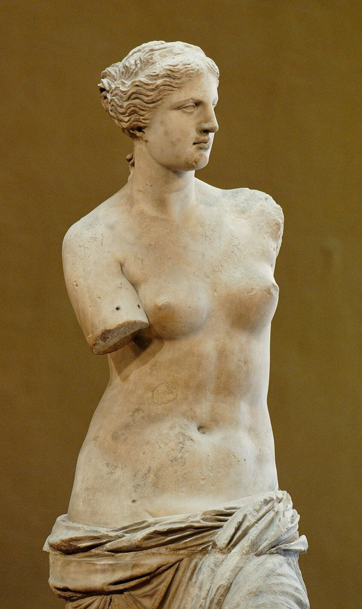
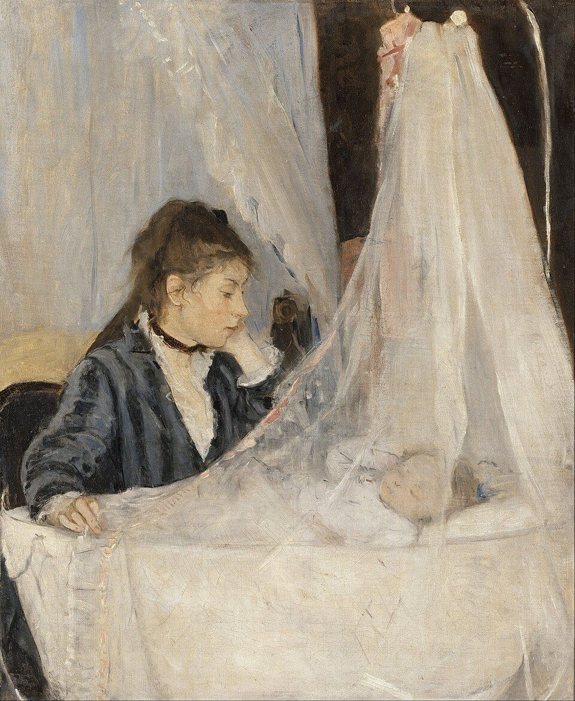
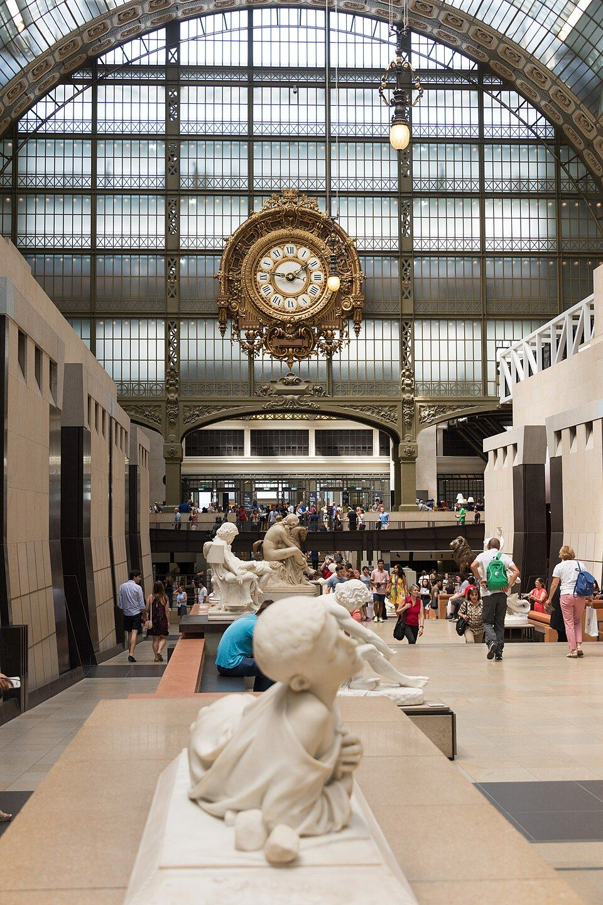
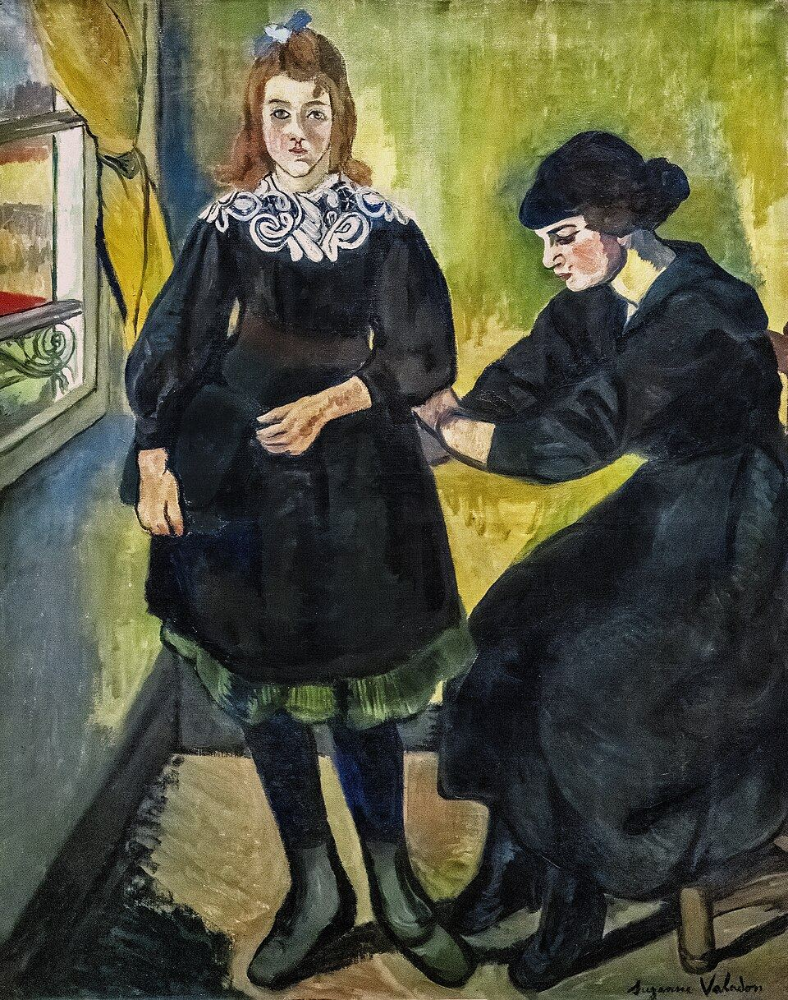
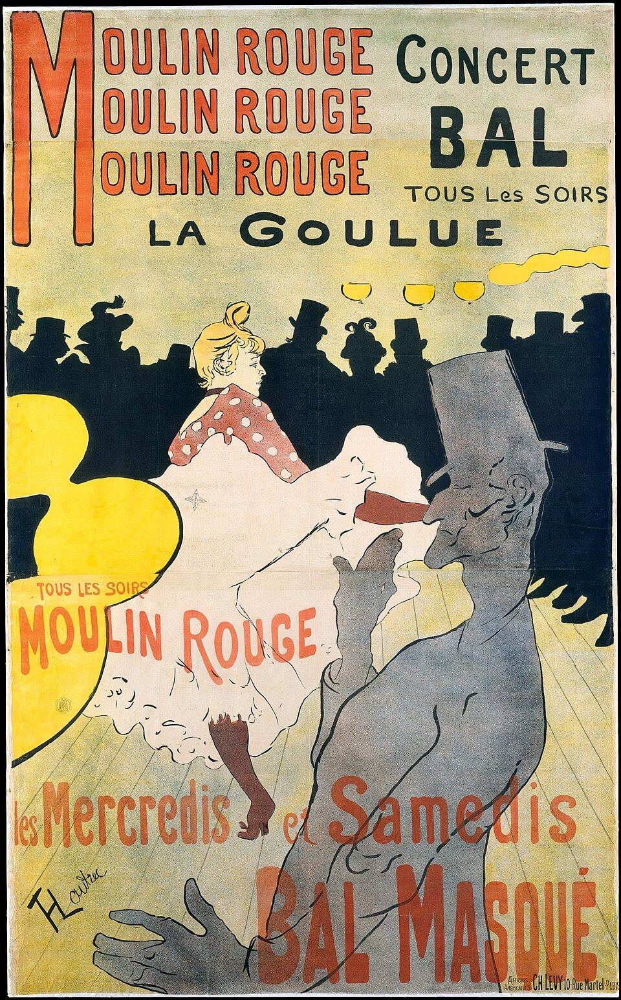

Le français avec Irène
La voix passiveLeçon de Filomeni · The passive voice
Le pont des Arts et l'Institut de France · Paris
Aujourd'hui, nous allons voir comment exprimer une action subie : la voix passive, puis les autres tournures françaises qui ont le même sens.
Today we will see how to express an action that someone or something undergoes: the passive voice, and then the other French structures with the same meaning.
Après chaque point de grammaire, vous trouverez tout de suite des exercices, corrigés immédiatement. Touchez 🔊 pour écouter et EN pour voir la traduction anglaise.
After each grammar point you will find exercises straight away, corrected immediately. Tap 🔊 to listen and EN to see the English translation.
Vos réponses sont enregistrées automatiquement : vous pouvez fermer la page et la rouvrir plus tard, tout sera encore là.
Your answers are saved automatically: you can close the page and open it again later, everything will still be there.
- 1Former la voix passiveForming the passive8 min
- 2Une condition : le complément d'objet directOne condition: a direct object7 min
- 3Par ou de ?Par or de?10 min
- 4Le passif sans complément d'agentThe passive without an agent6 min
- 5On + voix activeOn + active voice7 min
- 6Se faire + infinitifSe faire + infinitive7 min
- 7La forme pronominale de sens passifPronominal verbs with a passive meaning6 min
- 8Synthèse : choisir la bonne tournureReview: choosing the right structure9 min
- ★À revoirPoints to review
1
Former la voix passive
Forming the passive
≈ 8 min
La pyramide du Louvre, Ieoh Ming Pei, 1989 · Paris
À quoi sert la voix passive ?
What is the passive for?
À la voix active, le sujet fait l'action. À la voix passive, le sujet subit l'action : on met en avant la personne ou la chose qui reçoit l'action.
In the active voice, the subject does the action. In the passive voice, the subject undergoes it: the focus is on the person or thing that receives the action.
voix active
La secrétaire envoie les factures.
The secretary sends the invoices.
↓
voix passive
Les factures sont envoyées par la secrétaire.
The invoices are sent by the secretary.
On l'utilise surtout quand le résultat est plus important que la personne qui agit : dans la presse, l'administration, l'histoire, les sciences.
It is used above all when the result matters more than the person who acts: in the press, administration, history and science.
Le château de Versailles a été construit pour Louis XIV.
The Palace of Versailles was built for Louis XIV.
Les résultats de l'étude seront publiés en mars.
The results of the study will be published in March.
La formation : être + participe passé
Formation: être + past participle
être+participe passé+(par + agent)
Le verbe être se conjugue au même temps que le verbe actif. Le participe passé ne change pas de temps : c'est être qui porte le temps.
Être is conjugated in the same tense as the active verb. The past participle does not change: être carries the tense.
| Temps | Voix active | Voix passive |
|---|---|---|
| présent | On nettoie le cabinet. | Le cabinet est nettoyé. The office is cleaned. |
| passé composé | On a nettoyé le cabinet. | Le cabinet a été nettoyé. The office was cleaned / has been cleaned. |
| imparfait | On nettoyait le cabinet. | Le cabinet était nettoyé. The office was (being) cleaned. |
| plus-que-parfait | On avait nettoyé le cabinet. | Le cabinet avait été nettoyé. The office had been cleaned. |
| futur | On nettoiera le cabinet. | Le cabinet sera nettoyé. The office will be cleaned. |
| conditionnel | On nettoierait le cabinet. | Le cabinet serait nettoyé. The office would be cleaned. |
L'accord du participe passé
Agreement of the past participle
Comme un adjectif, le participe passé s'accorde avec le sujet : masculin ou féminin, singulier ou pluriel.
Like an adjective, the past participle agrees with the subject: masculine or feminine, singular or plural.
Le rendez-vous a été annulé.
The appointment was cancelled.
La séance a été annulée.
The session was cancelled.
Les rendez-vous ont été annulés.
The appointments were cancelled.
Les patientes ont été prévenues par téléphone.
The (female) patients were informed by phone.
Astuce
Le participe été ne s'accorde jamais. Seul le dernier participe s'accorde : la séance a été annulée.
The participle été never agrees. Only the last participle agrees.
Cartes de l'art Répondez, puis la carte se retourne. Answer, then the card flips over.
L'Arc de triomphe de l'Étoile, 1806-1836 · Paris
L'Arc de triomphe ______ par Napoléon en 1806.
L'Arc de triomphe a été commandé par Napoléon en 1806.
The Arc de Triomphe was commissioned by Napoleon in 1806.
💡 Passé composé de être (a été) + participe passé accordé avec « l'Arc », masculin singulier.
Passé composé of être + past participle agreeing with a masculine singular subject.
Notre-Dame de Paris, rouverte en décembre 2024 · Paris
Après l'incendie de 2019, la flèche de Notre-Dame ______ à l'identique.
Après l'incendie de 2019, la flèche de Notre-Dame a été reconstruite à l'identique.
After the 2019 fire, the spire of Notre-Dame was rebuilt exactly as it was.
💡 Le sujet est « la flèche », féminin : reconstruite.
The subject « la flèche » is feminine, so the participle takes -e.
Pèlerinage à l'île de Cythère, Antoine Watteau, 1717 · Musée du Louvre
« Watteau a présenté ce tableau à l'Académie en 1717. » → Ce tableau ______ à l'Académie en 1717.
Ce tableau a été présenté à l'Académie en 1717.
This painting was presented to the Academy in 1717.
💡 Passé composé actif (a présenté) → passé composé passif (a été présenté). Cythère est une île grecque, au sud du Péloponnèse.
Active passé composé → passive passé composé. Cythera is a Greek island south of the Peloponnese.
01
EXERCICE 1
Choisissez la bonne forme passive.
Choose the correct passive form.
1Chaque séance ______ à l'avance.
Chaque séance est payée à l'avance.
Each session is paid in advance.
💡 Présent : est + payée (la séance, féminin).
Present: est + payée (feminine).
2Le rendez-vous de lundi ______ hier soir.
Le rendez-vous de lundi a été annulé hier soir.
Monday's appointment was cancelled last night.
💡 « Hier soir » : action passée précise → passé composé a été annulé.
A precise past action → passé composé.
3Votre dossier ______ demain matin.
Votre dossier sera envoyé demain matin.
Your file will be sent tomorrow morning.
💡 « Demain » → futur : sera envoyé.
Tomorrow → future tense.
4Quand je suis arrivée, la salle ______ déjà ______.
Quand je suis arrivée, la salle avait déjà été préparée.
When I arrived, the room had already been prepared.
💡 Action antérieure à une autre action passée → plus-que-parfait : avait été préparée.
An action before another past action → pluperfect.
5Autrefois, ce quartier d'Athènes ______ par des artisans.
Autrefois, ce quartier d'Athènes était habité par des artisans.
In the past, this district of Athens was inhabited by craftsmen.
💡 « Autrefois » : description dans le passé → imparfait était habité.
A past description → imperfect.
6Nos billets pour Paris ______ hier.
Nos billets pour Paris ont été réservés hier.
Our tickets to Paris were booked yesterday.
💡 « Les billets » : masculin pluriel → réservés.
Masculine plural → -s.
02
EXERCICE 2
Mettez la phrase à la voix passive. Écrivez seulement le verbe.
Put the sentence into the passive. Write only the verb.
Le ministère finance ce projet.
1Ce projet ______ par le ministère.
Ce projet est financé par le ministère.
This project is funded by the ministry.
💡 Présent → est + financé.
Present → est + participle.
Une collègue a recommandé cette clinique.
2Cette clinique ______ par une collègue.
Cette clinique a été recommandée par une collègue.
This clinic was recommended by a colleague.
💡 Passé composé → a été + recommandée (la clinique).
Passé composé → a été + feminine participle.
La police contrôlera les passagers.
3Les passagers ______ par la police.
Les passagers seront contrôlés par la police.
The passengers will be checked by the police.
💡 Futur → seront + contrôlés.
Future → seront + plural participle.
Une agence organisait nos voyages.
4Nos voyages ______ par une agence.
Nos voyages étaient organisés par une agence.
Our trips were organised by an agency.
💡 Imparfait → étaient + organisés.
Imperfect → étaient + plural participle.
Le comité a accepté nos deux propositions.
5Nos deux propositions ______ par le comité.
Nos deux propositions ont été acceptées par le comité.
Our two proposals were accepted by the committee.
💡 Passé composé → ont été + acceptées (féminin pluriel).
Passé composé → feminine plural participle.
Le gardien ouvre le musée à neuf heures.
6Le musée ______ à neuf heures par le gardien.
Le musée est ouvert à neuf heures par le gardien.
The museum is opened at nine o'clock by the guard.
💡 Présent → est + ouvert (participe irrégulier de ouvrir).
Present → est + irregular participle.
2
Une condition : le complément d'objet direct
One condition: a direct object
≈ 7 min
Le pont Alexandre III, 1896-1900 · Paris
Seul le COD peut devenir sujet
Only the direct object can become the subject
La voix passive n'est possible qu'à une condition : à la voix active, le verbe doit avoir un complément d'objet direct (COD), c'est-à-dire un complément sans préposition.
The passive is possible on one condition only: in the active voice, the verb must have a direct object, that is, an object without a preposition.
Pour le trouver, posez la question qui ? ou quoi ? juste après le verbe.
To find it, ask who? or what? right after the verb.
✔ Le médecin examine la patiente. → La patiente est examinée par le médecin.
The doctor examines the patient. → The patient is examined by the doctor.
✔ Les touristes visitent l'Acropole. → L'Acropole est visitée par les touristes.
Tourists visit the Acropolis. → The Acropolis is visited by tourists.
Pas de COD = pas de passif · No direct object = no passive
Avec un verbe suivi de à ou de (COI), ou un verbe sans complément, le passif est impossible.
With a verb followed by à or de (indirect object), or a verb with no object, the passive is impossible.
Je téléphone à ma sœur.
I phone my sister.
✗ Ma sœur est téléphonée.
La patiente parle de son enfance.
The patient talks about her childhood.
✗ Son enfance est parlée.
Mon avion arrive à midi.
My plane arrives at noon.
✗ (arriver n'a pas de COD)
La chose, oui ; la personne introduite par à, jamais
The thing, yes; the person after à, never
Avec donner, offrir, envoyer, poser, proposer, promettre (quelque chose à quelqu'un), c'est la chose (le COD) qui devient sujet. La personne introduite par à ne devient jamais sujet.
With verbs like give, offer, send, ask, suggest, promise (something to someone), it is the thing that becomes the subject. The person introduced by à never becomes the subject.
✔ On a proposé une solution au patient. → Une solution a été proposée au patient.
A solution was suggested to the patient.
On a proposé une solution au patient.
The patient was offered a solution.
✗ Le patient a été proposé une solution.
Retenez
Le passif français ne transforme que le COD. Pour la personne (à quelqu'un), on utilise on : vous le verrez au point 5.
French passive only transforms the direct object. For the person (to someone), use on: see point 5.
Cartes de l'art Répondez, puis la carte se retourne. Answer, then the card flips over.

La Vénus de Milo, vers 150-125 av. J.-C. · Musée du Louvre
« Un paysan grec a découvert la statue en 1820 sur l'île de Milos. » La voix passive est-elle possible ?
La statue a été découverte en 1820 sur l'île de Milos par un paysan grec.
The statue was discovered in 1820 on the island of Milos by a Greek farmer.
💡 Découvrir quelque chose : la statue est un COD, donc le passif est possible.
Discover something: the statue is a direct object, so the passive works.
Le pont du Gard, Ier siècle · Vers-Pont-du-Gard
« Les visiteurs marchent sur le pont du Gard. » La voix passive est-elle possible ?
Les visiteurs marchent sur le pont du Gard.
Visitors walk on the Pont du Gard.
💡 Marcher sur quelque chose : pas de COD, donc pas de passif.
Walk on something: no direct object, so no passive.
03
EXERCICE 3
Voix passive possible ou impossible ?
Is the passive possible or impossible?
1La secrétaire envoie les factures.
Les factures sont envoyées par la secrétaire.
The invoices are sent by the secretary.
💡 Envoyer quoi ? les factures : COD.
Send what? the invoices: direct object.
2Je parle souvent à mes patients.
Je parle souvent à mes patients.
I often talk to my patients.
💡 Parler à quelqu'un : COI, pas de passif.
Talk to someone: indirect object, no passive.
3Le médecin a prescrit un traitement.
Un traitement a été prescrit par le médecin.
A treatment was prescribed by the doctor.
💡 Prescrire quoi ? un traitement : COD.
Prescribe what? a treatment: direct object.
4Mon avion arrive à Athènes à midi.
Mon avion arrive à Athènes à midi.
My plane arrives in Athens at noon.
💡 Arriver n'a pas de COD.
Arrive has no direct object.
5Ma mère a répondu à ma lettre.
Ma mère a répondu à ma lettre.
My mother replied to my letter.
💡 Répondre à : COI.
Reply to: indirect object.
6Des milliers de touristes visitent le Parthénon.
Le Parthénon est visité par des milliers de touristes.
The Parthenon is visited by thousands of tourists.
💡 Visiter quoi ? le Parthénon : COD.
Visit what? the Parthenon: direct object.
7Cette patiente plaît à tout le monde.
Cette patiente plaît à tout le monde.
Everybody likes this patient.
💡 Plaire à : COI.
Plaire à: indirect object.
8Le jury a félicité la candidate.
La candidate a été félicitée par le jury.
The candidate was congratulated by the jury.
💡 Féliciter qui ? la candidate : COD.
Congratulate whom? the candidate: direct object.
04
EXERCICE 4
Quelle phrase passive est correcte ?
Which passive sentence is correct?
1On a posé une question difficile à la ministre.
Une question difficile a été posée à la ministre.
A difficult question was put to the minister.
💡 Seule la chose (la question) peut devenir sujet.
Only the thing can become the subject.
2On a promis une augmentation aux infirmières.
Une augmentation a été promise aux infirmières.
The nurses were promised a pay rise.
💡 Promettre quelque chose à quelqu'un : la personne reste après à.
The person stays after à.
3On a offert un bouquet à ma mère.
Un bouquet a été offert à ma mère.
My mother was given a bouquet.
💡 Le bouquet (COD) devient sujet.
The bouquet becomes the subject.
4On a envoyé le rapport au tribunal.
Le rapport a été envoyé au tribunal.
The report was sent to the court.
💡 Envoyer quoi ? le rapport : c'est lui le sujet du passif.
The report is the direct object, so it becomes the subject.
3
Par ou de ?
Par or de?
≈ 10 min
La galerie des Glaces, Jules Hardouin-Mansart et Charles Le Brun, 1678-1684 · Château de Versailles
Par : le cas général
Par: the usual case
Le complément d'agent indique qui fait l'action. Il est le plus souvent introduit par par : l'agent agit, il fait une action concrète.
The agent tells us who does the action. It is usually introduced by par: the agent acts, it does something concrete.
Le tableau a été volé par deux hommes.
The painting was stolen by two men.
Cette patiente m'a été adressée par son médecin.
This patient was referred to me by her doctor.
Le colloque est organisé par l'université de Thessalonique.
The conference is organised by the University of Thessaloniki.
De : trois familles de verbes
De: three families of verbs
Avec trois types de verbes, on emploie de pour introduire le complément d'agent.
With three types of verbs, de introduces the agent.
1. Les verbes de sentiment · 1. Verbs of feeling
aimeradorerapprécierrespecteradmirerestimerdétestercraindreconnaître
Ma collègue est très appréciée de ses patients.
My colleague is very much liked by her patients.
Ce professeur était craint de tous ses élèves.
This teacher was feared by all his pupils.
Cette chanson est connue de tous les Grecs.
This song is known to every Greek.
2. Les verbes de description · 2. Verbs of description
Ils décrivent un état, une situation, et non une action.
They describe a state, a situation, not an action.
entouré decouvert derempli deorné dedécoré decomposé deaccompagné desuivi debordé de
Le village est entouré d'oliviers.
The village is surrounded by olive trees.
Mon bureau était couvert de livres.
My desk was covered with books.
Le dossier doit être accompagné d'une lettre.
The file must be accompanied by a letter.
3. Sens propre : par · sens figuré : de · 3. Literal meaning: par · figurative meaning: de
Certains verbes changent de préposition selon leur sens : par au sens propre (une vraie action), de au sens figuré.
Some verbs change preposition depending on meaning: par for the literal meaning (a real action), de for the figurative one.
couronner
sens propre · par
Joséphine a été couronnée par Napoléon.
Josephine was crowned by Napoleon.
sens figuré · de
Leurs efforts ont été couronnés de succès.
Their efforts were crowned with success.
frapper
sens propre · par
Il a été frappé par un inconnu.
He was hit by a stranger.
sens figuré · de
Il a été frappé de stupeur.
He was struck dumb with amazement.
saisir
sens propre · par
La drogue a été saisie par la douane.
The drugs were seized by customs.
sens figuré · de
Elle a été saisie de panique.
She was seized with panic.
prendre
sens propre · par
Le voleur a été pris par la police.
The thief was caught by the police.
sens figuré · de
Elle a été prise de vertige.
She was overcome by dizziness.
Astuce
par = une action · de = un sentiment, un état, une image. Devant une voyelle : d'.
par = an action · de = a feeling, a state, an image. Before a vowel: d'.
Cartes de l'art Répondez, puis la carte se retourne. Answer, then the card flips over.
Le Sacre de Napoléon, Jacques-Louis David, 1805-1807 · Musée du Louvre
Sur ce tableau, Joséphine est couronnée ______ Napoléon.
Sur ce tableau, Joséphine est couronnée par Napoléon.
In this painting, Josephine is crowned by Napoleon.
💡 Sens propre : Napoléon pose vraiment la couronne. Une action → par.
Literal meaning: a real action → par.
Les vitraux de la Sainte-Chapelle, 1242-1248 · Paris
La chapelle haute est ornée ______ magnifiques vitraux.
La chapelle haute est ornée de magnifiques vitraux.
The upper chapel is decorated with magnificent stained-glass windows.
💡 Orné de : verbe de description, un état → de.
A description, a state → de.

Le Berceau, Berthe Morisot, 1872 · Musée d'Orsay
Berthe Morisot était respectée ______ tous les peintres impressionnistes.
Berthe Morisot était respectée de tous les peintres impressionnistes.
Berthe Morisot was respected by all the Impressionist painters.
💡 Respecter : verbe de sentiment → de.
A verb of feeling → de.
Le Radeau de La Méduse, Théodore Géricault, 1818-1819 · Musée du Louvre
Au Salon de 1819, les visiteurs ont été frappés ______ horreur devant ce tableau.
Au Salon de 1819, les visiteurs ont été frappés d'horreur devant ce tableau.
At the 1819 Salon, visitors were struck with horror by this painting.
💡 Frappé d'horreur : sens figuré, personne ne frappe vraiment → de.
Figurative meaning → de.
05
EXERCICE 5
Par ou de ?
Par or de?
1Le cabinet est entouré ______ un grand jardin.
Le cabinet est entouré d'un grand jardin.
The office is surrounded by a large garden.
💡 Description d'un état → d'un grand jardin.
Description → de.
2La lettre a été écrite ______ la patiente elle-même.
La lettre a été écrite par la patiente elle-même.
The letter was written by the patient herself.
💡 Écrire : une action concrète → par.
A concrete action → par.
3Ce professeur est aimé ______ tous ses étudiants.
Ce professeur est aimé de tous ses étudiants.
This lecturer is loved by all his students.
💡 Aimer : sentiment → de.
Feeling → de.
4La voiture a été réparée ______ un mécanicien.
La voiture a été réparée par un mécanicien.
The car was repaired by a mechanic.
💡 Réparer : action → par.
Action → par.
5Ce jour-là, le ciel était couvert ______ nuages.
Ce jour-là, le ciel était couvert de nuages.
That day the sky was covered with clouds.
💡 Couvert de : description → de.
Description → de.
6Son premier roman a été couronné ______ succès.
Son premier roman a été couronné de succès.
Her first novel was a great success.
💡 Sens figuré → de.
Figurative → de.
7Louis XVI a été couronné ______ l'archevêque de Reims.
Louis XVI a été couronné par l'archevêque de Reims.
Louis XVI was crowned by the Archbishop of Reims.
💡 Sens propre : une vraie couronne → par.
Literal → par.
8En été, les rues d'Athènes sont remplies ______ touristes.
En été, les rues d'Athènes sont remplies de touristes.
In summer, the streets of Athens are full of tourists.
💡 Rempli de : description → de.
Description → de.
9Elle a été saisie ______ une profonde tristesse.
Elle a été saisie d'une profonde tristesse.
She was overcome with deep sadness.
💡 Sens figuré → d'une profonde tristesse.
Figurative → de.
10Le portefeuille volé a été saisi ______ la police.
Le portefeuille volé a été saisi par la police.
The stolen wallet was seized by the police.
💡 Sens propre : une action → par.
Literal → par.
11Le directeur était accompagné ______ deux collègues.
Le directeur était accompagné de deux collègues.
The director was accompanied by two colleagues.
💡 Accompagné de : description → de.
Description → de.
12Le rapport a été lu ______ toute l'équipe.
Le rapport a été lu par toute l'équipe.
The report was read by the whole team.
💡 Lire : action → par.
Action → par.
06
EXERCICE 6
Pourquoi « de » ? Choisissez la raison.
Why « de »? Choose the reason.
1Elle est adorée de ses neveux.
Elle est adorée de ses neveux.
She is adored by her nephews.
💡 Adorer exprime un sentiment.
Adore expresses a feeling.
2La salle est décorée de fleurs.
La salle est décorée de fleurs.
The room is decorated with flowers.
💡 On décrit l'état de la salle.
We describe the room.
3Il a été frappé d'étonnement.
Il a été frappé d'étonnement.
He was struck with astonishment.
💡 Personne ne l'a frappé : c'est une image.
Nobody hit him: it's an image.
4La maison est entourée d'oliviers.
La maison est entourée d'oliviers.
The house is surrounded by olive trees.
💡 On décrit le lieu.
We describe the place.
5Ce médecin est estimé de ses collègues.
Ce médecin est estimé de ses collègues.
This doctor is held in high esteem by his colleagues.
💡 Estimer exprime un sentiment.
Esteem expresses a feeling.
6Notre projet a été couronné de succès.
Notre projet a été couronné de succès.
Our project was crowned with success.
💡 Il n'y a pas de vraie couronne : sens figuré.
No real crown: figurative.
4
Le passif sans complément d'agent
The passive without an agent
≈ 6 min
Le Panthéon, Jacques-Germain Soufflot, 1758-1790 · Paris
Quand on ne dit pas qui agit
When we don't say who acts
Très souvent, la phrase passive n'a pas de complément d'agent. On ne le dit pas quand il est :
Very often, a passive sentence has no agent. We leave it out when it is:
• inconnu : Mon portefeuille a été volé dans le métro.
unknown: My wallet was stolen on the metro.
• évident : Ma sœur a été opérée hier. (par un chirurgien, bien sûr)
obvious: My sister had an operation yesterday. (by a surgeon, of course)
• sans importance : La séance de jeudi a été reportée.
unimportant: Thursday's session has been postponed.
Le suspect a été arrêté, mais il a le droit d'être défendu.
The suspect was arrested, but he has the right to be defended.
Les verbes impersonnels : jamais d'agent
Impersonal verbs: never an agent
Avec un verbe impersonnel (sujet il qui ne représente personne), le passif est lui aussi impersonnel et ne contient jamais de complément d'agent. C'est la langue des règlements, des annonces et des comptes rendus.
With an impersonal verb (subject il standing for nobody), the passive is impersonal too and never has an agent. It is the language of rules, notices and reports.
Il est / Il a été+participe passé+de + infinitif / que + phrase
Il est interdit de fumer dans la salle d'attente.
Smoking is forbidden in the waiting room.
Il est conseillé de réserver à l'avance.
Booking in advance is recommended.
Il a été décidé de fermer le cabinet en août.
It has been decided to close the practice in August.
Il a été convenu que la réunion aurait lieu en ligne.
It was agreed that the meeting would take place online.
Cartes de l'art Répondez, puis la carte se retourne. Answer, then the card flips over.

L'horloge du musée d'Orsay, ancienne gare de 1900 · Paris
« La gare d'Orsay a été transformée en musée en 1986. » Pourquoi n'y a-t-il pas de complément d'agent ?
La gare d'Orsay a été transformée en musée en 1986.
The Orsay railway station was turned into a museum in 1986.
💡 Ce qui compte, c'est le résultat : la gare est devenue un musée.
What matters is the result.

La Couturière, Suzanne Valadon, 1914 · Centre Pompidou, Paris
Dans le musée : « ______ de toucher les œuvres. »
Il est interdit de toucher les œuvres.
Touching the works of art is forbidden.
💡 Passif impersonnel : il est interdit de + infinitif, sans agent.
Impersonal passive, no agent.
07
EXERCICE 7
Mettez au passif sans complément d'agent. Écrivez seulement le verbe.
Put into the passive without an agent. Write only the verb.
Quelqu'un a cambriolé mon appartement.
1Mon appartement ______.
Mon appartement a été cambriolé.
My flat was burgled.
💡 Agent inconnu (quelqu'un) → on le supprime.
Unknown agent → left out.
On a annulé mon train pour Paris.
2Mon train pour Paris ______.
Mon train pour Paris a été annulé.
My train to Paris was cancelled.
💡 « On » ne devient jamais complément d'agent.
« On » never becomes an agent.
Un chirurgien opérera ma sœur demain.
3Ma sœur ______ demain.
Ma sœur sera opérée demain.
My sister will have an operation tomorrow.
💡 Agent évident → supprimé ; futur, féminin : sera opérée.
Obvious agent → left out.
On construira un nouveau musée à Thessalonique.
4Un nouveau musée ______ à Thessalonique.
Un nouveau musée sera construit à Thessalonique.
A new museum will be built in Thessaloniki.
💡 Futur : sera construit.
Future tense.
On a retrouvé les clés sous le canapé.
5Les clés ______ sous le canapé.
Les clés ont été retrouvées sous le canapé.
The keys were found under the sofa.
💡 Les clés : féminin pluriel → retrouvées.
Feminine plural.
08
EXERCICE 8
Complétez ces annonces et règlements.
Complete these notices and rules.
1______ de stationner devant l'entrée.
Il est interdit de stationner devant l'entrée.
Parking in front of the entrance is forbidden.
💡 Passif impersonnel, sans agent.
Impersonal passive, no agent.
2Il a été décidé ______ reporter le congrès.
Il a été décidé de reporter le congrès.
It has been decided to postpone the conference.
💡 Il a été décidé de + infinitif.
de + infinitive.
3Il est recommandé ______ arriver dix minutes avant la séance.
Il est recommandé d'arriver dix minutes avant la séance.
You are advised to arrive ten minutes before the session.
💡 de + infinitif ; devant une voyelle : d'.
de + infinitive.
4Il a été convenu ______ la réunion aurait lieu en ligne.
Il a été convenu que la réunion aurait lieu en ligne.
It was agreed that the meeting would take place online.
💡 Suivi d'une phrase avec sujet et verbe → que.
Followed by a clause → que.
5Il est demandé aux patients ______ éteindre leur téléphone.
Il est demandé aux patients d'éteindre leur téléphone.
Patients are asked to switch off their phones.
💡 Demander à quelqu'un de faire quelque chose.
Ask someone to do something: de.
5
On + voix active
On + active voice
≈ 7 min
La place de la Concorde et l'obélisque de Louxor · Paris
On : le sens passif, à la forme active
On: a passive meaning with an active verb
On, pronom indéfini sujet, suivi d'un verbe à la voix active, a le même sens qu'un passif sans complément d'agent.
On, the indefinite subject pronoun, followed by an active verb, has the same meaning as a passive without an agent.
voix active
On a repeint la salle d'attente.
Someone repainted the waiting room.
↓
voix passive
La salle d'attente a été repeinte.
The waiting room was repainted.
1. Quand le passif est lourd · 1. When the passive is heavy
À l'oral surtout, on est plus simple et plus naturel.
Above all when speaking, on is simpler and more natural.
On m'a volé mon sac à Monastiraki.
My bag was stolen at Monastiraki.
On parle grec et anglais dans cet hôtel.
Greek and English are spoken in this hotel.
2. Quand le passif est impossible · 2. When the passive is impossible
Avec les verbes construits avec à + personne (demander, conseiller, dire, promettre, permettre, interdire, répondre, téléphoner…), la personne ne peut pas devenir sujet. On utilise on.
With verbs built with à + person, the person cannot become the subject. Use on.
✗ La patiente a été conseillée de se reposer.
✔ On a conseillé à la patiente de se reposer.
The patient was advised to rest.
✗ J'ai été dit que le musée était fermé.
✔ On m'a dit que le musée était fermé.
I was told that the museum was closed.
✗ Les voyageurs ont été demandés de descendre.
✔ On a demandé aux voyageurs de descendre du train.
The passengers were asked to get off the train.
Cartes de l'art Répondez, puis la carte se retourne. Answer, then the card flips over.

Moulin-Rouge, La Goulue, Henri de Toulouse-Lautrec, 1891 · affiche
Quelle phrase est correcte ?
On a demandé à Toulouse-Lautrec de dessiner une affiche.
Toulouse-Lautrec was asked to design a poster.
💡 Demander à quelqu'un : passif impossible → on.
Ask someone: passive impossible → on.
La Grèce sur les ruines de Missolonghi, Eugène Delacroix, 1826 · Musée des Beaux-Arts de Bordeaux
« On a exposé ce tableau à Paris en 1826 pour soutenir les Grecs. » → Ce tableau ______ à Paris en 1826.
Ce tableau a été exposé à Paris en 1826 pour soutenir les Grecs.
This painting was exhibited in Paris in 1826 to support the Greeks.
💡 On + actif ↔ passif sans agent : a été exposé.
On + active ↔ passive without agent.
09
EXERCICE 9
Le passif est impossible : écrivez la phrase avec « on ».
The passive is impossible: write the sentence with « on ».
✗ Le patient a été conseillé de revenir lundi.
1______ au patient de revenir lundi.
On a conseillé au patient de revenir lundi.
The patient was advised to come back on Monday.
💡 Conseiller à quelqu'un → on a conseillé.
Advise someone → on.
✗ J'ai été dit que le vol était complet.
2______ que le vol était complet.
On m'a dit que le vol était complet.
I was told that the flight was full.
💡 Dire à quelqu'un → on m'a dit.
Tell someone → on m'a dit.
✗ Les passagers ont été demandés de montrer leur passeport.
3______ aux passagers de montrer leur passeport.
On a demandé aux passagers de montrer leur passeport.
The passengers were asked to show their passports.
💡 Demander à quelqu'un → on a demandé.
Ask someone → on.
✗ Nous avons été promis une réponse rapide.
4______ une réponse rapide.
On nous a promis une réponse rapide.
We were promised a quick answer.
💡 Promettre à quelqu'un → on nous a promis.
Promise someone → on nous a promis.
✗ Elle a été répondue très vite.
5______ très vite.
On lui a répondu très vite.
She got an answer very quickly.
💡 Répondre à quelqu'un → on lui a répondu.
Reply to someone → on lui a répondu.
10
EXERCICE 10
Remplacez le passif par « on ». Écrivez seulement le verbe.
Replace the passive with « on ». Write only the verb.
Le colis a été livré ce matin.
1On ______ le colis ce matin.
On a livré le colis ce matin.
The parcel was delivered this morning.
💡 Même temps : passé composé → a livré.
Same tense.
Les résultats seront publiés lundi.
2On ______ les résultats lundi.
On publiera les résultats lundi.
The results will be published on Monday.
💡 Futur → publiera.
Future.
Le grec est parlé à Chypre.
3On ______ grec à Chypre.
On parle grec à Chypre.
Greek is spoken in Cyprus.
💡 Présent → parle.
Present.
Le cabinet était fermé en août.
4On ______ le cabinet en août.
On fermait le cabinet en août.
The practice used to be closed in August.
💡 Imparfait → fermait.
Imperfect.
6
Se faire + infinitif
Se faire + infinitive
≈ 7 min
Le Palais Garnier, Charles Garnier, 1875 · Paris
Un sujet animé qui subit l'action
An animate subject undergoing the action
Se faire + infinitif est une construction très courante. Le sujet est animé : une personne ou un animal. L'action est faite par quelqu'un d'autre.
Se faire + infinitive is a very common structure. The subject is animate: a person or an animal. The action is done by someone else.
sujet animé+se faire+infinitif+(par + agent)
1. On demande à quelqu'un de le faire · 1. You get someone to do it
Je me suis fait couper les cheveux.
I had my hair cut.
Elle va se faire tatouer une chouette sur l'épaule.
She is going to get an owl tattooed on her shoulder.
Mon père se fait opérer du genou en janvier.
My father is having a knee operation in January.
2. On subit quelque chose, souvent de désagréable · 2. Something happens to you, often unpleasant
Il s'est fait suivre par un inconnu.
He was followed by a stranger.
Tu vas te faire voler ton portable !
You're going to get your phone stolen!
Dans le roman, le roi se fait empoisonner.
In the novel, the king gets poisoned.
Attention
Au passé composé, fait ne s'accorde jamais : Elle s'est fait voler son sac. Elles se sont fait tatouer.
In the passé composé, fait never agrees.
Cartes de l'art Répondez, puis la carte se retourne. Answer, then the card flips over.
Louis XIV en costume de sacre, Hyacinthe Rigaud, 1701 · Musée du Louvre
Louis XIV ______ par Hyacinthe Rigaud en 1701.
Louis XIV s'est fait peindre par Hyacinthe Rigaud en 1701.
Louis XIV had his portrait painted by Hyacinthe Rigaud in 1701.
💡 Le roi demande au peintre de faire son portrait : se faire peindre, et fait ne s'accorde pas.
He had himself painted; fait never agrees.
Marie-Antoinette à la rose, Élisabeth Vigée Le Brun, 1783 · Château de Versailles
Marie-Antoinette s'est fait ______ plusieurs fois par Élisabeth Vigée Le Brun.
Marie-Antoinette s'est fait peindre plusieurs fois par Élisabeth Vigée Le Brun.
Marie-Antoinette had her portrait painted several times by Élisabeth Vigée Le Brun.
💡 Après se faire, toujours l'infinitif.
After se faire, always the infinitive.
11
EXERCICE 11
Conjuguez se faire + infinitif au temps indiqué.
Conjugate se faire + infinitive in the tense given.
se faire couper · passé composé
1Hier, Eleni ______ les cheveux.
Hier, Eleni s'est fait couper les cheveux.
Yesterday Eleni had her hair cut.
💡 Être + fait (invariable) + infinitif.
fait is invariable.
se faire voler · infinitif
2Attention dans le métro, tu vas ______ ton portable !
Attention dans le métro, tu vas te faire voler ton portable !
Careful on the metro, you'll get your phone stolen!
💡 Aller + infinitif : le pronom s'accorde avec le sujet (tu → te).
The pronoun matches the subject.
se faire tatouer · passé composé
3Mes deux cousines ______ une petite fleur.
Mes deux cousines se sont fait tatouer une petite fleur.
My two cousins got a little flower tattooed.
💡 Pluriel, mais fait reste invariable.
Plural, but fait stays the same.
se faire rembourser · passé composé
4Je ______ mes séances par l'assurance.
Je me suis fait rembourser mes séances par l'assurance.
I got my sessions reimbursed by the insurance.
💡 Je → me suis fait + infinitif.
Je → me suis fait.
se faire piquer · passé composé
5Le chat ______ par une guêpe.
Le chat s'est fait piquer par une guêpe.
The cat got stung by a wasp.
💡 Un animal est un sujet animé : s'est fait piquer.
An animal is an animate subject.
se faire opérer · futur
6Mon père ______ du genou en janvier.
Mon père se fera opérer du genou en janvier.
My father will have a knee operation in January.
💡 Futur de se faire : se fera + infinitif.
Future of se faire.
12
EXERCICE 12
Se faire ou être ? Regardez le sujet !
Se faire or être? Look at the subject!
1La Joconde ______ volée au Louvre en 1911.
La Joconde a été volée au Louvre en 1911.
The Mona Lisa was stolen from the Louvre in 1911.
💡 Un tableau n'est pas animé → a été volée.
A painting is not animate.
2Ma voisine ______ renverser par un scooter.
Ma voisine s'est fait renverser par un scooter.
My neighbour got knocked over by a scooter.
💡 Sujet animé + infinitif → s'est fait renverser.
Animate subject + infinitive.
3La lettre ______ envoyée lundi.
La lettre a été envoyée lundi.
The letter was sent on Monday.
💡 Une chose + participe passé → a été.
A thing + past participle.
4Le petit garçon ______ gronder par sa mère.
Le petit garçon s'est fait gronder par sa mère.
The little boy got told off by his mother.
💡 Sujet animé + infinitif.
Animate subject + infinitive.
5Mon frère ______ arrêter pour excès de vitesse.
Mon frère s'est fait arrêter pour excès de vitesse.
My brother got stopped for speeding.
💡 Après « arrêter » (infinitif) → s'est fait.
Followed by an infinitive.
6Le musée ______ fermé pour travaux.
Le musée a été fermé pour travaux.
The museum has been closed for renovation.
💡 Une chose + participe passé → a été.
A thing + past participle.
7
La forme pronominale de sens passif
Pronominal verbs with a passive meaning
≈ 6 min
La cité de Carcassonne · Aude
Se + verbe avec un sujet « chose »
Se + verb with a « thing » subject
Avec un sujet inanimé (une chose), se + verbe peut avoir un sens passif. Il n'y a jamais de complément d'agent.
With an inanimate subject (a thing), se + verb can have a passive meaning. There is never an agent.
Elle exprime une habitude, une règle, une possibilité ou une vérité générale.
It expresses a habit, a rule, a possibility or a general truth.
Les livres de poche se vendent bien.
Paperbacks sell well.
Ce soir, la lune se voit très bien.
Tonight the moon can be seen very clearly.
Cette écharpe se lave à la main.
This scarf must be washed by hand.
Le vin blanc se boit frais.
White wine is drunk chilled.
Le mot « psyché » s'écrit avec un y.
The word « psyché » is spelt with a y.
Ça ne se fait pas !
That's not done!
en général : une règle
Le vin blanc se boit frais.
une action précise
Le vin blanc a été bu hier soir.
Retenez
Aux temps composés, le participe s'accorde avec le sujet : Cette maison s'est vendue en une semaine.
In compound tenses the participle agrees with the subject.
Cartes de l'art Répondez, puis la carte se retourne. Answer, then the card flips over.
La tour Eiffel, Gustave Eiffel, 1889 · Paris
La tour Eiffel ______ de presque tout Paris.
La tour Eiffel se voit de presque tout Paris.
The Eiffel Tower can be seen from almost everywhere in Paris.
💡 Sujet chose, possibilité → se voit.
A thing, a possibility → se voit.
La Victoire de Samothrace, vers 190 av. J.-C. · Musée du Louvre
La Victoire de Samothrace ______ tout de suite à ses grandes ailes.
La Victoire de Samothrace se reconnaît tout de suite à ses grandes ailes.
The Winged Victory of Samothrace is recognisable at once by its great wings.
💡 Vérité générale, sujet chose → se reconnaît. Cette statue grecque a été découverte sur l'île de Samothrace en 1863.
General truth, thing → se reconnaît.
13
EXERCICE 13
Complétez avec la forme pronominale de sens passif.
Complete with the pronominal passive.
laver · présent
1Ce pull en laine ______ à la main.
Ce pull en laine se lave à la main.
This woollen jumper must be washed by hand.
💡 Règle d'entretien → se lave.
A care instruction.
vendre · présent
2Ces médicaments ne ______ que sur ordonnance.
Ces médicaments ne se vendent que sur ordonnance.
These medicines are only sold on prescription.
💡 Sujet pluriel → se vendent.
Plural subject.
préparer · présent
3Le café grec ______ dans un petit briki.
Le café grec se prépare dans un petit briki.
Greek coffee is made in a small briki.
💡 Habitude, vérité générale → se prépare.
A habit, a general truth.
dire · présent
4Ce genre de chose ne ______ pas en public.
Ce genre de chose ne se dit pas en public.
That kind of thing is not said in public.
💡 Une règle de politesse → se dit.
A rule of politeness.
écrire · présent
5Le mot « rythme » ______ avec un y.
Le mot « rythme » s'écrit avec un y.
The word « rythme » is spelt with a y.
💡 Élision devant une voyelle : s'écrit.
Elision before a vowel.
louer · passé composé
6Cet appartement ______ en deux jours.
Cet appartement s'est loué en deux jours.
This flat was rented out in two days.
💡 Passé composé avec être, accord avec le sujet (masculin).
Passé composé with être.
boire · présent
7Le champagne ______ très frais.
Le champagne se boit très frais.
Champagne is served well chilled.
💡 Vérité générale → se boit.
General truth.
8
Synthèse : choisir la bonne tournure
Review: choosing the right structure
≈ 9 min
Le château de Chambord, 1519-1547 · Loir-et-Cher
Les cinq façons d'exprimer le sens passif
Five ways to express a passive meaning
être + participe passé
Le Parthénon a été restauré.
The Parthenon has been restored.
il + passif impersonnel
Il est interdit de fumer.
Smoking is forbidden.
on + voix active
On m'a demandé mon passeport.
I was asked for my passport.
se faire + infinitif (personne)
Elle s'est fait voler sa valise.
She had her suitcase stolen.
se + verbe (chose)
Ce plat se mange froid.
This dish is eaten cold.
14
EXERCICE 14
Choisissez la phrase correcte et la plus naturelle.
Choose the correct and most natural sentence.
1Personne ne sait qui a pris ton parapluie.
Ton parapluie a été volé.
Your umbrella has been stolen.
💡 Sujet chose, agent inconnu → passif sans agent.
Thing, unknown agent → passive without agent.
2À l'accueil, la secrétaire m'a demandé de remplir un formulaire.
On m'a demandé de remplir un formulaire.
I was asked to fill in a form.
💡 Demander à quelqu'un → on.
Ask someone → on.
3La semaine dernière, devant la gare…
La semaine dernière, devant la gare, je me suis fait voler mon vélo.
Last week, outside the station, I had my bike stolen.
💡 Personne qui subit → se faire + infinitif, fait invariable.
se faire + infinitive, fait invariable.
4Une recette de mon île :
Ce gâteau se prépare avec du miel.
This cake is made with honey.
💡 Sujet chose, règle générale → se prépare.
Thing, general rule → pronominal.
5Ma collègue est très appréciée ______ ses patients.
Ma collègue est très appréciée de ses patients.
My colleague is very much liked by her patients.
💡 Verbe de sentiment → de.
Verb of feeling → de.
6Le Parthénon ______ au Ve siècle avant J.-C.
Le Parthénon a été construit au Ve siècle avant J.-C.
The Parthenon was built in the 5th century BC.
💡 Une action historique précise → passif.
A precise historical action → passive.
7Sur la porte du cabinet :
Il est demandé de ne pas sonner.
Please do not ring the bell.
💡 Passif impersonnel, sans agent.
Impersonal passive.
8Mon article ______ par une revue allemande.
Mon article a été accepté par une revue allemande.
My article was accepted by a German journal.
💡 Sujet chose + agent précis → passif avec par.
Thing + specific agent → passive with par.
9L'Acropole ______ de presque tous les quartiers d'Athènes.
L'Acropole se voit de presque tous les quartiers d'Athènes.
The Acropolis can be seen from almost every district of Athens.
💡 Sujet chose, possibilité → se voit.
Thing, possibility → se voit.
10Le dossier ______ trois documents.
Le dossier est accompagné de trois documents.
The file comes with three documents.
💡 Description → de.
Description → de.
✍
PRODUCTION ÉCRITE
À vous : un incident de voyage
Your turn: a travel incident
Racontez en 6 à 8 phrases un petit incident de voyage (entre l'Allemagne, Paris et la Grèce, par exemple). Utilisez au moins une fois chaque tournure de la leçon.
In 6 to 8 sentences, tell the story of a small travel incident (between Germany, Paris and Greece, for example). Use each structure from the lesson at least once.
Utilisez :
- un passif avec para passive with par
- un passif sans complément d'agenta passive without an agent
- une phrase avec ona sentence with on
- se faire + infinitifse faire + infinitive
- une forme pronominale de sens passifa pronominal passive
- un verbe avec de (entouré de, couvert de, apprécié de…)a verb with de
Mots utiles
être retardéto be delayedêtre annuléto be cancelledêtre rembourséto be refundedêtre pris de paniqueto be seized with panicse faire aiderto get helpse faire rembourserto get a refundça ne se fait pasthat's not doneêtre bondé de mondeto be packed with people
Pour commencer
La semaine dernière, mon vol pour Athènes a été…
Last week, my flight to Athens was…
À l'aéroport, on m'a dit que…
At the airport, I was told that…
Pendant que j'attendais, je me suis fait…
While I was waiting, I got…
Heureusement, le problème a été réglé par…
Luckily, the problem was solved by…
Finalement, …
In the end, …
Votre texte est enregistré automatiquement. Irène le corrigera avec vous.
À revoir
Points to review: each one links back to the rule.
Vos réponses
Elles sont enregistrées sur cet appareil. Pour continuer sur un autre appareil (téléphone, tablette, ordinateur), créez un lien et ouvrez-le sur l'autre appareil.
They are saved on this device. To carry on on another device, create a link and open it there.